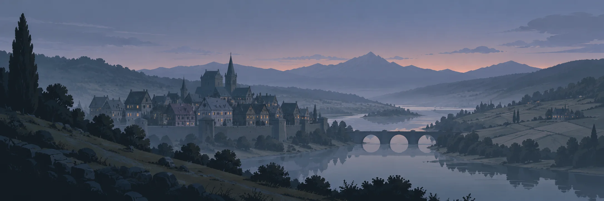

The Crown holds the heart. The edges are yours to take.

The Ravenmarch is one realm under an NPC Crown that no player can overthrow. It keeps the heartland safe but can't hold the wild edges, so it grants royal charters to guilds that swear fealty.
Guilds hold land by oath and keep it by iron.
Land held by oath
Guilds that swear fealty are granted a royal charter over wild land. There they raise keeps and fight for rare resources,. The throne itself is never up for grabs.
A home of your own
Houses are planned for after launch: buy one at a set plot and step through the door into your own space, with the finest shown in the world for everyone to see.
Planned design, not playable yet. The map is a sketch of how the land is divided, not the real map.